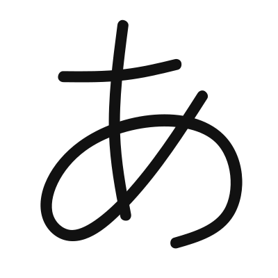
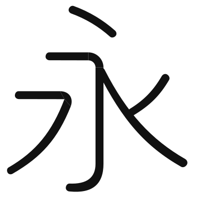
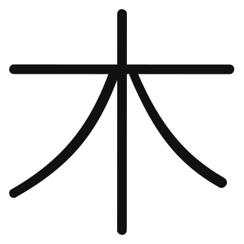
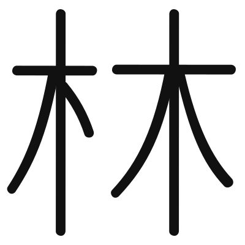

あ

14点・3画
hira-long [0, 1, 2] NIL hira-long [3, 4, 5] NIL hira-long [6, 7, 8, 9, 10, 11, 12, 13] NIL
永

16点・7画
hidari [0, 1, 2] NIL migi [3, 4, 5] NIL tatehane [6, 7, 8] ((LINK 3)) hidari [9, 10, 11] NIL yoko [12, 9] NIL yoko [13, 6] NIL ten [14, 15] NIL
木

10点・4画
migi [0, 1, 2] NIL hidari [3, 4, 5] NIL tate [6, 7] NIL yoko [8, 9] ((LINK 3 0))
林

19点・8画
ten [0, 1] NIL hidari [2, 3, 4] NIL tate [5, 6] NIL yoko [7, 8] ((LINK 2)) migi [9, 10, 11] NIL hidari [12, 13, 14] NIL tate [15, 16] NIL yoko [17, 18] ((LINK 12 9))
。
2点・1画
hira-circle [0, 1] NIL
一
2点・1画
yoko [0, 1] NIL
田
10点・6画
tate [0, 1] ((LINK 3 2)) tate [4, 5] NIL tate [6, 7] ((LINK 9 8)) yoko [8, 2] ((LINK 5)) yoko [9, 3] NIL yoko [6, 0] ((LINK 4))